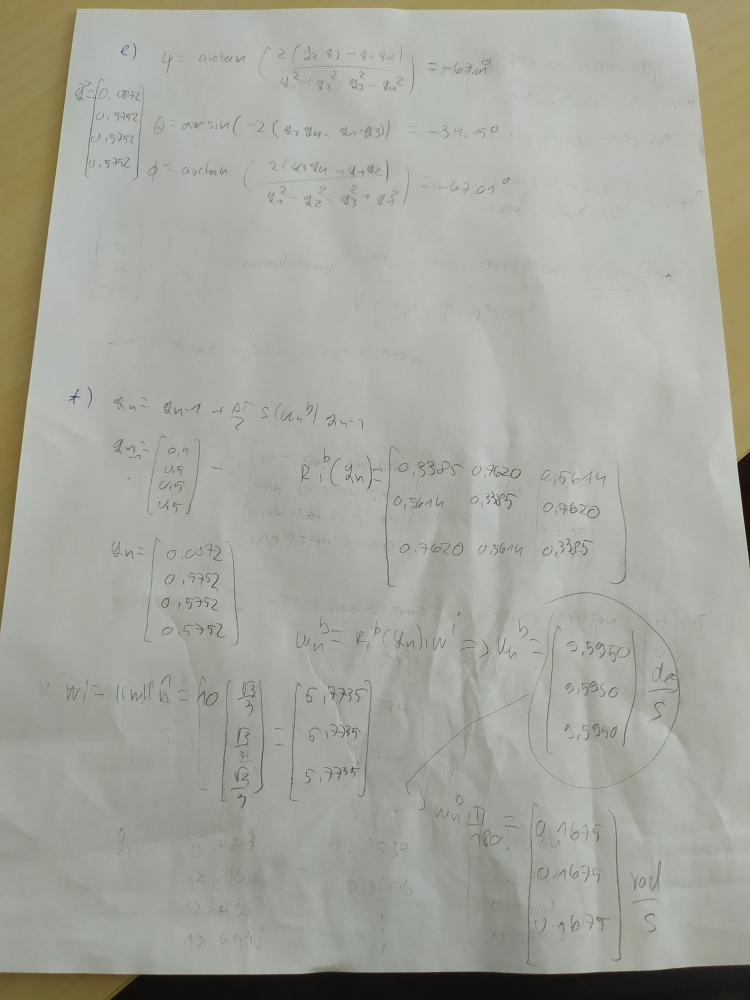
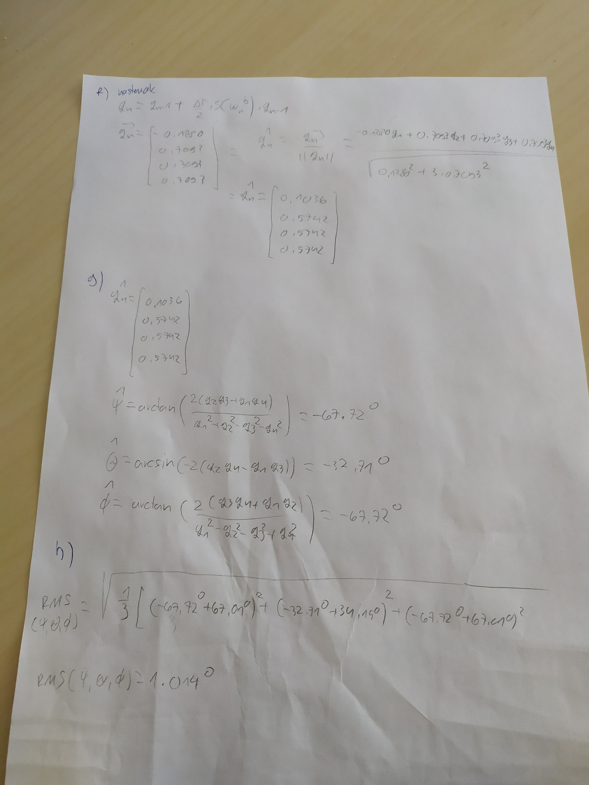
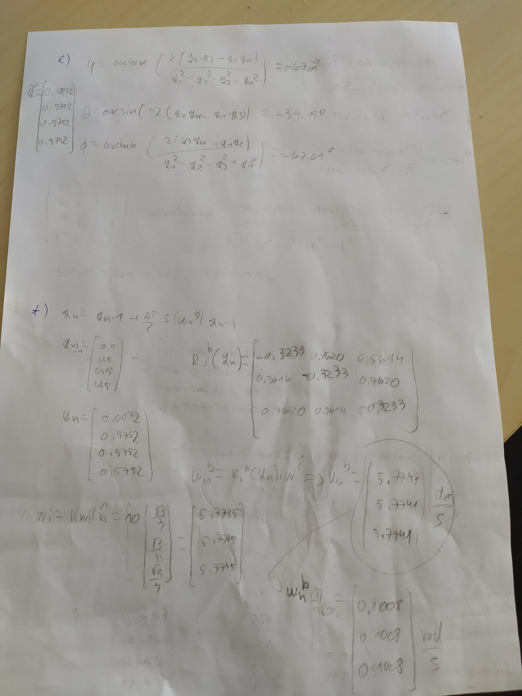
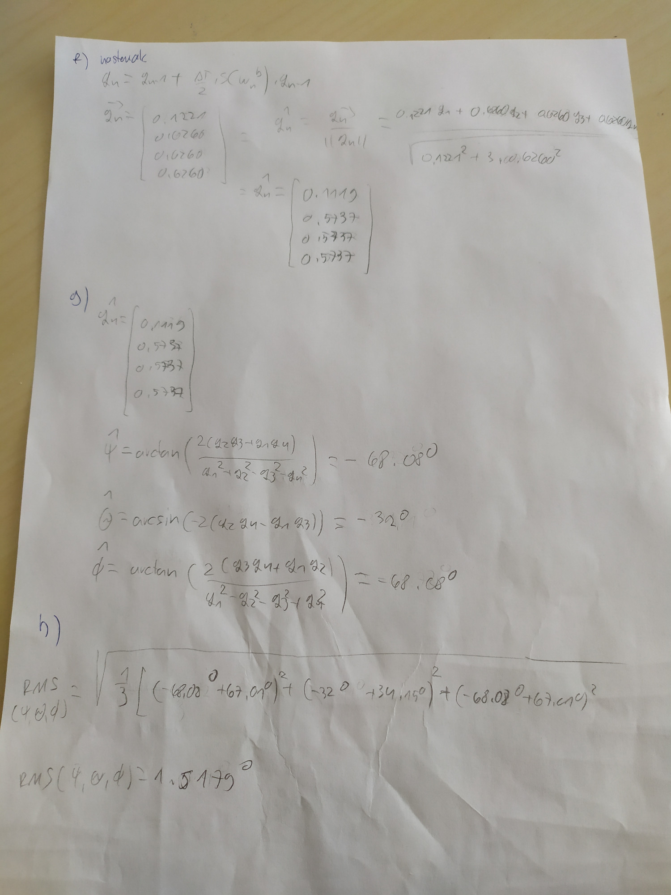
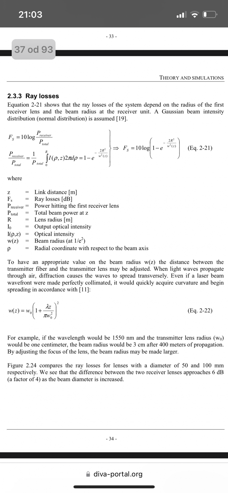

dontc4m4pc ja sam tako to rijesio da
MOXY Ja sam našao da je taj sigma prirodni pojas zrake, tj. širina najužeg dijela zrake, https://www.gentec-eo.com/blog/laser-beam-divergence-measurement Al kako doć do toga nemam pojma
lincthesinc17
MrPeanutButter
 
Ovo je od e ) pa nadalje, sad jel dobro neznam al cini se da je…
Kuhar cini se da sam napravio gresku u f) zadatku gdje sam krivo izracunao u R matrici vrijednosti na dijagonali ( umjesto 0.3385 treba ici -0.3233)
 
Treba paziti jer moguce da mi se opet neka greska podmetnula…
zna netko 7?
Kuhar prodano, ima smisla
11.?
MOXY Ja sam našao ovaj odgovor: https://testbook.com/question-answer/the-transmission-path-loss-for-a-geostationary-sat--5f3e928a9edc50260de54455. Kod nas je ista stvar, samo je druga frekvencija pa mi rješenje ispada 203.9dB
Jel netko zna prvi pod b?
jel 2. i 7. ko rjesio?
lincthesinc17 Za 7. imaš odgovor ovdje, https://electronicsdesk.com/travelling-wave-tube.html#BasicConcept, pod “Need for slow-wave structure”
Kuhar Odakle ti u f ova formula za qn?
indythedog
Ako ima neka dobra dusa za 2, 5 i 7 da napise rj 😅
ja sam u petom samo objasnio sta je target i sta je nadir i napiso da kamera mora bit okomotia na zemljinu povrsinu jer je nadir a antena mora bit od kutem da je usmjerena prema zemaljskoj jer je target, ne znam sta tu drugo treba pisat haha
ima neko 1. b)
Jel ima ko 2.?
Može li netko poslati cijeli 1.zadatak?
Artemis a) c) https://fer.studosi.net/d/7354-sveteh-1-domaca-zadaca-20212022/10 d) https://fer.studosi.net/d/7354-sveteh-1-domaca-zadaca-20212022/25 e) f) g) h) https://fer.studosi.net/d/7354-sveteh-1-domaca-zadaca-20212022/61 b) nije nitko riješio (bar za sad u ovoj temi)
 Jel bi imalo smisla za 2 a uzet ovu formulu Fs, tako da w0 stavim radijus lece tj 6 cm, z kao udaljenost od mjeseca do zemlje, a R kao radijus od zrcala
steker a za b) istu formulu samo je sad izvor zrcalo a primatelj leća, pa zamjenimo R i w0. Ne znam dal ovo ista ima smisla
steker
steker jesi mozda uspjela ovo? cini mi se kao ok logika